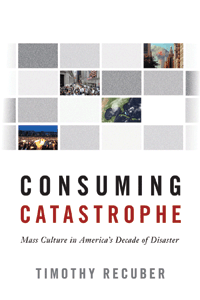

<body bgcolor="#FFFFFF" text="#000000" link="#0000FF" vlink="#CC0000" alink="#CC0000"><center><hr width="350" size="1" align="center" noshade>Examines the media's coverage of four American disasters, arguing that media attention directs our concern for the suffering of others toward efforts to soothe our own emotional turmoil<hr width="350" size="1" align="center" noshade><p><a href="https://cdcshoppingcart.uchicago.edu/Cart/ChicagoBook.aspx?ISBN=&&PRESS=temple" target="_top">Buy this book!</a> | <a href="https://cdcshoppingcart.uchicago.edu/Cart/Cart.aspx?PRESS=temple" target="_top">View Cart</a> | <a href="https://cdcshoppingcart.uchicago.edu/Cart/Cart.aspx?PRESS=temple" target="_top">Check Out</a></p><p></p></center><!--none//--><h1 class = "booktitle">Consuming Catastrophe
</h1> <h1 class = "subtitle">Mass Culture in America's Decade of Disaster</h1>
<h3>Timothy Recuber</h3>
paper: $28.95, Oct 16<BR>EAN:&nbsp;978-1-4399-1370-3<BR><font color=#990033>Available</FONT><font size=-7><br>&nbsp;</font></p><p class="info">cloth: $89.50, Oct 16<BR>EAN:&nbsp;978-1-4399-1369-7<BR><font color=#990033>Available</FONT><font size=-7><br>&nbsp;</font></p><p class="info">e-book: $28.95, Nov 16<BR>EAN:&nbsp;978-1-4399-1371-0<BR><font color=#990033>Available</FONT><font size=-7><br>&nbsp;</font></p></p></td></tr></table>
<BR> <p class="info">228 pp<BR> 5.5 x 8.25<BR> 5 tables <p class="info"><font size=-7>&nbsp;</font></p><p class="info">
</P><BLOCKQUOTE><p>
"<i>With&nbsp;</i>Consuming Catastrophe<i>,&nbsp;Timothy Recuber&nbsp;has given us a precise and nuanced understanding of how the cultural consumption of mass-mediated catastrophes dramatizes fear and anticipation of the next crisis while promoting symbolic integration and a yearning for a better world</i>."-<b>David L. Altheide</b>, Emeritus Regents' Professor, Arizona State University
<br></BLOCKQUOTE>
<p>
Horrified, saddened, and angered: That was the American people's reaction to the 9/11 attacks, Hurricane Katrina, the Virginia Tech shootings, and the 2008 financial crisis. In <i>Consuming Catastrophe, </i>Timothy Recuber presents a unique and provocative look at how these four very different disasters took a similar path through public consciousness. He explores the myriad ways we engage with and negotiate our feelings about disasters and tragedies-from omnipresent media broadcasts to relief fund efforts and promises to "Never Forget." <br>
<p>Recuber explains how a specific and "real" kind of emotional connection to the victims becomes a crucial element in the creation, use, and consumption of mass mediation of disasters. He links this to the concept of "empathetic hedonism," or the desire to understand or feel the suffering of others. <br>
<p>The ineffability of disasters makes them a spectacular and emotional force in contemporary American culture. <i>Consuming Catastrophe </i>provides a lively analysis of the themes and meanings of tragedy and the emotions it engenders in the representation, mediation and consumption of disasters.
<br>
<P CLASS="top"><A HREF="#top">BACK TO TOP</A></P>&nbsp;<h2 class="inpageheading"><A NAME="excerpt"></a>Excerpt</h2><p>
Read the Introduction (pdf).
<br>
<P CLASS="top"><A HREF="#top">BACK TO TOP</A></P>
<BR>&nbsp;
<h2 class="inpageheading"><A NAME="reviews"></a>Reviews</h2>
<p>
"Consuming Catastrophe<i> is a fascinating contemporary-historical analysis of a cluster of major recent disasters, complete with exploitation, media roles, and ‘authentic' emotions. Recuber provides imaginative methods and probing conclusions about the vulnerabilities of American individualism</i>."-<b>Peter N. Stearns</b>, University Professor of History, George Mason University
<br>
<p>
"<i>Recuber draws from a wide variety of theoretical perspectives spanning the fields of media sociology, cultural studies, and psychoanalysis to illuminate the way catastrophes, both natural and social, are mediated in the new media environment.&nbsp;The result is the most complete discussion of catastrophe media available.&nbsp;In Consuming Catastrophe, we&nbsp;learn the limits of mediated empathy, fear, and redemption in our society's attempts to come to grips with the ‘reality' of catastrophe.&nbsp;But it is the nature of a realistic take on catastrophe that is itself at issue in post-mediated society. Creative, learned, and singular in its perspective on interpreting catastrophe and its coverage, </i>Consuming Catastrophe<i> is a fresh take on an increasingly important issu</i>e."-<b>Andrea L. Press</b>, William R. Kenan Jr. Professor of Media Studies and Sociology, University of Virginia
<br>
<P CLASS="top"><A HREF="#top">BACK TO TOP</A></P>&nbsp;<P>
<h2 class="inpageheading"><A NAME="contents"></a>Contents</h2><P><SPAN STYLE="font-family: 'Verdana';font-size: 13px;" >Acknowledgments<BR><BR>Introduction: A Decade of Disaster<BR>1. A History of Catastrophe: Media, Mass Culture, and Authenticity<BR>2. The Limits of Empathy: Hurricane Katrina and the Virginia Tech Shootings<BR>3. The Authenticity of Fear: September 11 and the Financial Crisis<BR>4. Memory as Therapy: September 11, Hurricane Katrina, and Online Commemoration<BR>Conclusion: The Deepwater Horizon Oil Spill and Disasters Still to Come<BR><BR>References<BR>Index</SPAN></P>
<P CLASS="top"><A HREF="#top">BACK TO TOP</A></P>
</P><BR>&nbsp;
<H2 class="inpageheading"><A NAME="author bio"></a>About the Author(s)</H2><p>
<b>Timothy Recuber</b> is a Visiting Assistant Professor in the Communication Department at Hamilton College.
<br>
<P CLASS="top"><A HREF="#top">BACK TO TOP</A></P>
<p><h2 class="inpageheading"><A NAME="subjects"></a>Subject Categories</h2><P><A HREF="/tempress/american.html" TARGET="_top">American Studies</a><BR><P><A HREF="/tempress/cultural.html" TARGET="_top">Cultural Studies</a><BR><P><A HREF="/tempress/sociology.html" TARGET="_top">Sociology</a></P></P>
</p>
<P>
</P>
<p align="center"><a href="https://cdcshoppingcart.uchicago.edu/Cart/ChicagoBook.aspx?ISBN=&&PRESS=temple" target="_top">Buy this book!</a> | <a href="https://cdcshoppingcart.uchicago.edu/Cart/Cart.aspx?PRESS=temple" target="_top">View Cart</a> | <a href="https://cdcshoppingcart.uchicago.edu/Cart/Cart.aspx?PRESS=temple" target="_top">Check Out</a></p><p><font face="Arial" size="1"><a href="copyright.html" onMouseOver="window.status='Web Copyright Policy';return true;" onMouseOut="window.status=''" title="Web Copyright Policy">&copy;</a> 2016 <a href="http://www.temple.edu" target="new" onMouseOver="window.status='Link to Temple University home page';return true;" onMouseOut="window.status=''" title="Link to Temple University home page">Temple University</a>. All Rights Reserved. http://www.temple.edu/tempress/titles/2409_reg.html</font></p>